Einstellungen und Darstellung
Die Einstellungen umfassen Optionen, die in ganz LemmaLoom gelten. Dazu gehören das Thema, die Sprache der Benutzeroberfläche, das Transkriptionsmodell, Ihre eigenen Ausschlussmuster, die Darstellung in der Leseansicht sowie Farbe und Stil von vier Lenses.
Die Sprache eines einzelnen Dokuments, seine Lenses und der Text, den es von der Analyse ausschließt, gehören dagegen nicht dazu.
Das Einstellungsfenster
Um die Einstellungen zu öffnen, wählen Sie LemmaLoom ▸ Einstellungen … oder drücken ⌘,.
Die Seitenleiste links führt drei Bereiche auf: Allgemein (Symbol eines Zahnrads), Leseansicht (Symbol eines Buchs) und Lenses (Symbol eines Kreises auf einem Quadrat). Wenn Sie die Einstellungen nach dem Start von LemmaLoom zum ersten Mal öffnen, erscheint der Bereich Allgemein.
| Bereich | Abschnitte | Was sie festlegen |
|---|---|---|
| Allgemein | Erscheinungsbild, Sprache, Transkription, Ausschluss-Voreinstellungen | Das Thema, die Sprache der Benutzeroberfläche, das Spracherkennungsmodell und Ihre eigenen Muster, mit denen Sie Text von der Analyse ausschließen |
| Leseansicht | Typografie, Seite, Auswahl, Vorschau | Schrift, Textgröße und Layout der Leseansicht, die Absatz- und Satznummern neben dem Text und die Darstellung von Auswahl und Audiowiedergabe |
| Lenses | Wortklasse, Grammatische Funktion, Phrase, Morphologie | Farbe und Stil jedes Aspekts dieser vier Lenses |
Änderungen an den Einstellungen wirken sofort, im Einstellungsfenster ebenso wie in jedem geöffneten Dokument. Nur die Sprache der Benutzeroberfläche wechselt erst beim nächsten Start von LemmaLoom.
Wenn Sie an den Rändern des Fensters ziehen, ändern Sie seine Größe und schaffen Platz für einen großen Bereich wie Lenses. Ist ein Bereich höher als das Fenster, können Sie den übrigen Teil scrollen.
Änderungen an den Einstellungen gelten sofort (siehe Kapitel 23, Widerrufen und Wiederholen). Um eine Änderung zurückzunehmen, wählen Sie wieder den vorherigen Wert oder klicken auf eine Schaltfläche zum Zurücksetzen, etwa Alles auf Standard zurücksetzen oben in den Bereichen Leseansicht und Lenses. Für alle übrigen Einstellungen nennt dieses Kapitel die Standardwerte.
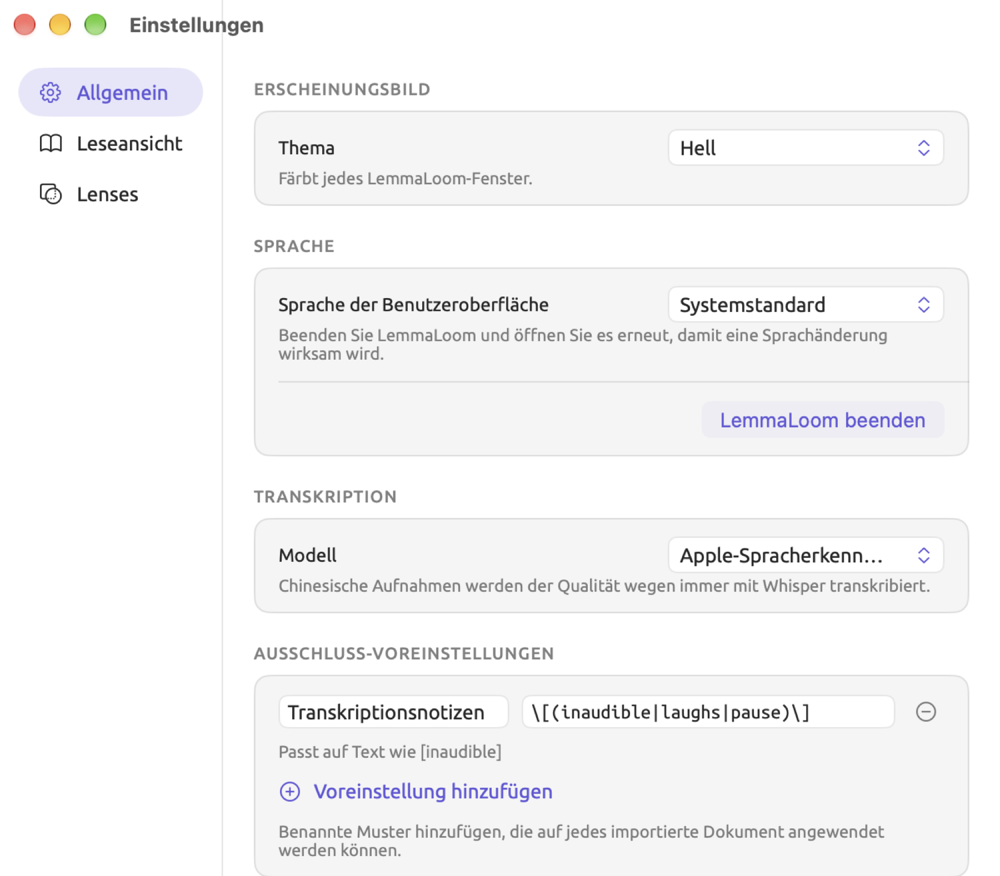
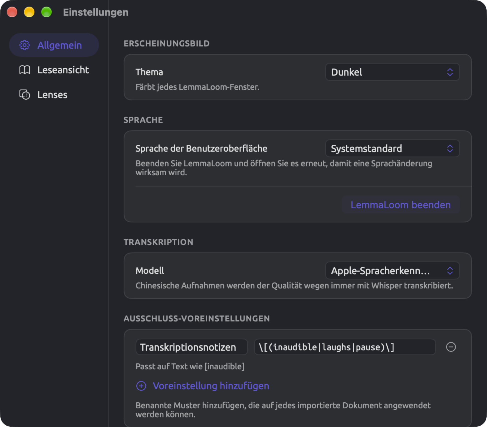
Themen
Ein Thema ist der Satz von Farben für die gesamte Benutzeroberfläche der App. Es bestimmt, ob Ihre Fenster hell oder dunkel sind, welche Farben Fensterleisten und Seitenbereiche haben, welche Papier- und Schriftfarbe die Leseansicht hat, und vieles mehr. Auch Ihre Akzentfarbe hängt vom Thema ab. Sie färbt aktive Auswahlen, etwa den gewählten Bereich in der Seitenleiste der Einstellungen oder die Schaltfläche Mit dem Audio scrollen, solange sie eingeschaltet ist.
LemmaLoom bietet elf Themen:
| Thema | Hell oder dunkel | Farben |
|---|---|---|
| System | folgt macOS | die Standardfarben von macOS, hell oder dunkel je nach Einstellung von macOS |
| Hell | hell | die hellen Standardfarben von macOS, auch wenn macOS dunkel eingestellt ist |
| Dunkel | dunkel | die dunklen Standardfarben von macOS, auch wenn macOS hell eingestellt ist |
| Creme | hell | dunkelbrauner Text auf warmem, gebrochenem Weiß, mit braunem Akzent |
| Solarized Hell | hell | graublauer Text auf blassem Cremeton, beige Leisten, blauer Akzent |
| Solarized Dunkel | dunkel | blassgrauer Text auf tiefem Blaugrün, blauer Akzent |
| Hoher Kontrast | hell | schwarzer Text auf Weiß, schwarze Trennlinien, tiefblauer Akzent |
| Hoher Kontrast (Dunkel) | dunkel | weißer Text auf Schwarz, weiße Trennlinien, gelber Akzent |
| Protanopie | folgt macOS | die Standardfarben von macOS, Lens- und Codefarben an Rotblindheit angepasst, blauer Akzent |
| Deuteranopie | folgt macOS | die Standardfarben von macOS, Lens- und Codefarben an Grünblindheit angepasst, blauer Akzent |
| Tritanopie | folgt macOS | die Standardfarben von macOS, Lens- und Codefarben an Blaublindheit angepasst, orangeroter Akzent |
Zu Beginn ist System eingestellt. Dieses Thema wechselt automatisch zwischen hell und dunkel, je nachdem, ob macOS gerade hell oder dunkel erscheint, auch wenn das Erscheinungsbild von macOS auf Automatisch steht.
System, Hell und Dunkel verwenden die Akzentfarbe, die macOS für LemmaLoom vorgibt. Standardmäßig ist das ein Violettblau; je nach Ihren Einstellungen unter Systemeinstellungen ▸ Erscheinungsbild kann es auch eine andere Farbe sein. Alle anderen Themen verwenden immer ihren eigenen Akzent.
So ändern Sie das Thema:
- Wählen Sie LemmaLoom ▸ Einstellungen … (⌘,) und klicken Sie auf Allgemein.
- Öffnen Sie unter Erscheinungsbild das Menü Thema.
- Wählen Sie ein Thema.
Alle Fenster wechseln gleichzeitig, auch das Einstellungsfenster.
Auf Beamern verblassen helle Farben schnell. Mit Hoher Kontrast bleiben Seitenbereiche, Listen und Trennlinien auch auf einem Beamer sichtbar, während die Leseansicht genauso aussieht wie in Hell.
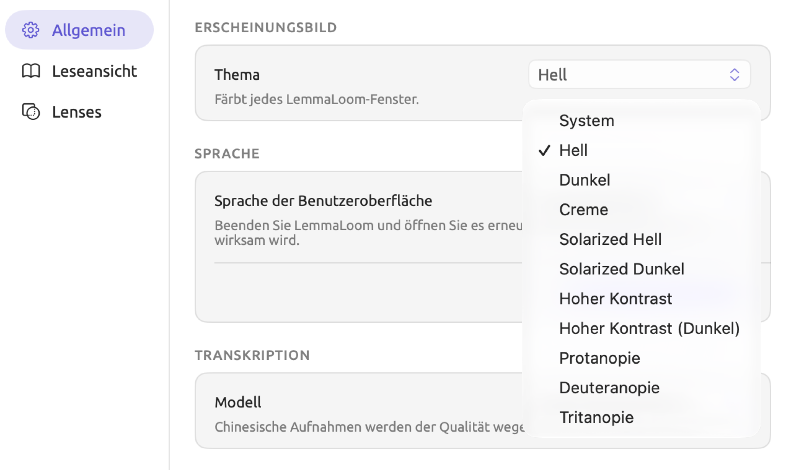
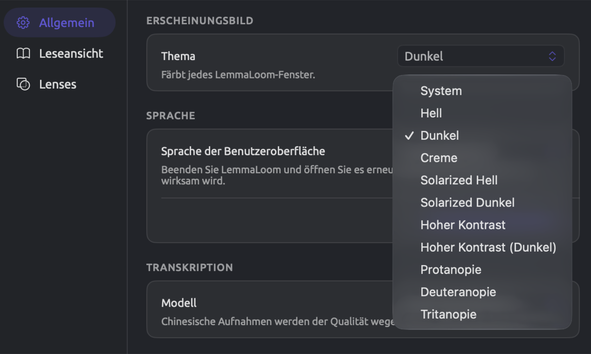
Was ein Thema verändert
Ein Thema verändert in jedem Fenster von LemmaLoom, auch in den Fenstern Glossar und Analysatoren, das Aussehen folgender Elemente:
- Elemente, die macOS darstellt, etwa Rollbalken und Textfelder, erscheinen je nach Thema hell oder dunkel, unabhängig davon, wie macOS eingestellt ist.
- Der Fensterhintergrund und der Streifen am oberen Fensterrand nehmen die Leistenfarbe des aktuellen Themas an. In Creme, Solarized Hell und Solarized Dunkel bildet diese Farbe von oben nach unten einen sanften Verlauf zwischen zwei Tönen.
- Papier- und Textfarbe der Leseansicht folgen dem Thema, wie unter Farben der Leseansicht in Kapitel 5, Lesen und Bearbeiten aufgeführt. In der Leseansicht sieht Hoher Kontrast genauso aus wie Hell und Hoher Kontrast (Dunkel) genauso wie Dunkel.
- Die Markierung von ausgewähltem Text und die Einfügemarke in Textfeldern erscheinen in der Akzentfarbe des Themas, in System, Hell und Dunkel dagegen in der Auswahlfarbe von macOS.
- In den fünf Themen mit eigenen Farben erscheinen Tabellenköpfe in der Leistenfarbe und ihre Linien in der Trennlinienfarbe des Themas, und die Zeilen wechseln zwischen zwei Hintergrundtönen.
- Dialoge, darunter Dokumenteigenschaften und Dokument importieren, übernehmen Papier- und Textfarbe des aktuellen Themas.
- Der Code-Editor unter Fenster ▸ Analysatoren wechselt mit dem aktiven Thema zwischen seinen hellen und dunklen Farben.
- Im Vollbildmodus erscheint die Symbolleiste am oberen Bildschirmrand in der Leistenfarbe des aktiven Themas.
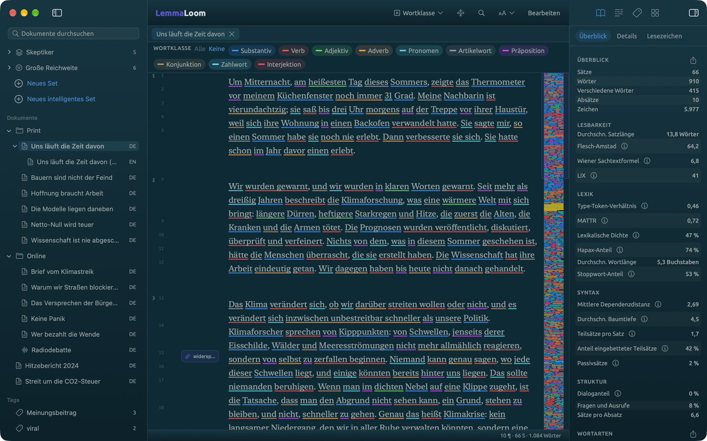
Farben, die gleich bleiben
Codes und Wörterbuchkategorien behalten ihre Farben in jedem Thema außer Protanopie, Deuteranopie und Tritanopie, die sie für die Anzeige anpassen. Dasselbe gilt für die Aspekte einer Lens, deren Farbe Sie im Bereich Lenses geändert haben.
Die voreingestellten Farben der Aspekte sind Standardfarben von macOS, die in dunklen Themen etwas heller werden. Sobald Sie für einen Aspekt eine Farbe wählen (eine neue oder die, die er schon hatte), bleibt diese Farbe fest. Wenn Sie die Farbe des Aspekts im Bereich Lenses zurücksetzen, passt sie sich wieder an.
Wenn Sie zwischen hellen und dunklen Themen wechseln, prüfen Sie, ob Ihre eigenen Farben in beiden gut lesbar sind. Ein helles Gelb etwa, das auf dem Hintergrund von Solarized Dunkel gut zu lesen ist, verschwindet auf dem reinweißen Hintergrund von Hoher Kontrast fast ganz.
Die Sprache der Benutzeroberfläche
Menüs, Fenster und Meldungen von LemmaLoom können auf Englisch, auf Deutsch oder in vereinfachtem Chinesisch (wie in China verwendet) erscheinen. Mit Systemstandard, der Voreinstellung, richtet sich die Wahl nach der Reihenfolge der Sprachen unter Systemeinstellungen ▸ Allgemein ▸ Sprache & Region. Steht keine dieser Sprachen in der Liste, verwendet LemmaLoom Englisch.
So wählen Sie eine Sprache nur für die Benutzeroberfläche von LemmaLoom:
- Wählen Sie LemmaLoom ▸ Einstellungen … (⌘,) und klicken Sie auf Allgemein.
- Öffnen Sie unter Sprache das Menü Sprache der Benutzeroberfläche und wählen Sie English, Deutsch oder 简体中文. Mit Systemstandard folgt LemmaLoom wieder macOS.
- Klicken Sie auf LemmaLoom beenden unter dem Hinweis Beenden Sie LemmaLoom und öffnen Sie es erneut, damit eine Sprachänderung wirksam wird.
- Öffnen Sie LemmaLoom erneut.
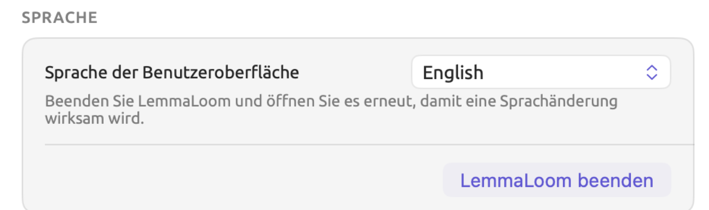
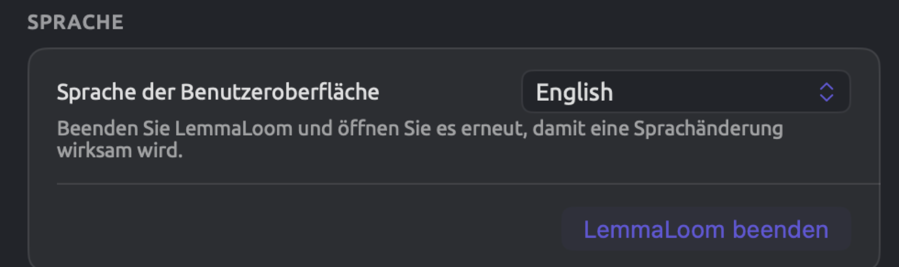
Jede Sprache steht unter ihrem eigenen Namen im Menü.
Die Sprache der Benutzeroberfläche gilt für Menüs, Beschriftungen, Meldungen, die Namen der Lenses und ihrer Aspekte, das Glossar und die Beispieltexte in der Vorschau des Bereichs Leseansicht. Jedes Dokument wird in der Sprache indiziert, in der es geschrieben ist. Auch bei englischer Benutzeroberfläche werden die deutschen Dokumente von „Klimadebatte“ also als deutsche Texte indiziert. Wie LemmaLoom die Sprache eines Dokuments bestimmt, beschreibt Wie LemmaLoom die Sprache bestimmt in Kapitel 21, Analyse und Indizierung.
Wenn Sie in diesem Menü eine Sprache wählen, schlägt der Dialog Übersetzen außerdem diese Sprache zuerst als Zielsprache vor. Mit English schlägt er zum Beispiel vor, den deutschen Meinungsbeitrag „Netto-Null wird teuer“ ins Englische zu übersetzen (siehe Der Dialog Übersetzen in Kapitel 9, Übersetzungen und geteilte Ansicht).
Auch die Sprache des Beispielprojekts hängt von ihr ab. Mit Ablage ▸ Importieren ▸ Beispielprojekt erhalten Sie bei englischer Benutzeroberfläche „Climate Debate“, bei deutscher „Klimadebatte“ und bei chinesischer „气候辩论“ (siehe Das Beispielprojekt in Kapitel 1, Einführung). Eine Kopie, die Sie bereits importiert haben, behält ihre Sprache.
Das Transkriptionsmodell
Wenn Sie eine Audio- oder Videodatei importieren, transkribiert LemmaLoom sie automatisch mit einem Spracherkennungsmodell (siehe Wie die Transkription funktioniert in Kapitel 4, Material importieren). Welches Modell dabei zum Einsatz kommt, wählen Sie im Menü Modell unter Transkription:
| Modell | Hinweise |
|---|---|
| Apple-Spracherkennung | Die Voreinstellung und das schnellste Modell |
| Whisper Large v3 Turbo | Das schnellere der beiden Whisper-Modelle |
| Whisper Large v3 | Langsamer und bei schwierigen Aufnahmen manchmal etwas genauer |
Chinesische Aufnahmen transkribiert LemmaLoom auch dann mit Whisper, wenn Sie Apple-Spracherkennung gewählt haben, weil Whisper dabei die bessere Qualität liefert.
Ein Modellwechsel gilt ab der nächsten Aufnahme, die Sie importieren. Um zu prüfen, ob ein anderes Modell bessere Ergebnisse bringt, importieren Sie einen kurzen, schwierigen Ausschnitt mit beiden Modellen und vergleichen die Transkripte nebeneinander.
Ausschluss-Voreinstellungen
Beim Import eines Dokuments oder später in seinen Dokumenteigenschaften können Sie Textmuster angeben, die LemmaLoom übergehen soll, sodass an diesen Stellen keinerlei Grammatikanalyse stattfindet. Solche Muster erfassen etwa Zeitstempel, Sprecherkennzeichnungen und viele andere Arten von Text (siehe Text von der Indizierung ausschließen in Kapitel 4, Material importieren). Geschrieben werden sie als reguläre Ausdrücke, eine knappe Schreibweise für eine bestimmte Form von Text, etwa jedes Wort in eckigen Klammern. Das Menü Voreinstellungen neben dem Eingabefeld für das Muster enthält von Haus aus fünf Voreinstellungen.
Eine Ausschluss-Voreinstellung ist ein selbst definiertes Muster mit eigenem Namen, das im Menü Voreinstellungen erscheint.
Angenommen, Sie haben mehrere abgetippte Transkripte von Radiogesprächen, in denen Pausen, Lachen und unverständliche Äußerungen als [pause], [laughs] und [inaudible] vermerkt sind (die Vermerke sollen im Text bleiben, sind aber nichts Gesprochenes). Mit diesen Schritten legen Sie eine Ausschluss-Voreinstellung für die drei Vermerke an:
- Wählen Sie LemmaLoom ▸ Einstellungen … (⌘,) und klicken Sie auf Allgemein.
- Klicken Sie unter Ausschluss-Voreinstellungen auf Voreinstellung hinzufügen. Eine neue Zeile mit zwei leeren Feldern erscheint.
- Geben Sie in das Feld Name
Transkriptionsnotizenein. Unter diesem Namen zeigt das Menü Voreinstellungen die Voreinstellung an. - Geben Sie in das Feld Muster
\[(inaudible|laughs|pause)\]ein.
Die Zeile unter dem Feld beschreibt, worauf der eingegebene reguläre Ausdruck passt, hier Passt auf Text wie [inaudible]. Kann LemmaLoom zu dem Ausdruck keinen passenden Beispieltext bilden, steht dort Gültiges Muster. Ein ungültiges Muster enthält einen Syntaxfehler, etwa eine Klammer ohne Gegenstück. Bei einem ungültigen Muster erscheint in roter Schrift Kein gültiges Muster.
Die umgekehrten Schrägstriche sorgen dafür, dass die eckigen Klammern wörtlich erfasst werden, und die senkrechten Striche trennen die Alternativen innerhalb der runden Klammern. Fügen Sie |crosstalk in die runden Klammern ein, erfasst das Muster auch [crosstalk]. Dieses Muster unterscheidet Groß- und Kleinschreibung und erfasst [laughs] daher nur in Kleinbuchstaben.
Die Voreinstellung wird schon während der Eingabe gespeichert. Sie erscheint im Menü Voreinstellungen der Importdialoge (Dokument importieren, bei einer Webseite Aus dem Web importieren) und in den Dokumenteigenschaften, direkt nach den fünf Standardvoreinstellungen und durch eine Linie von ihnen getrennt.
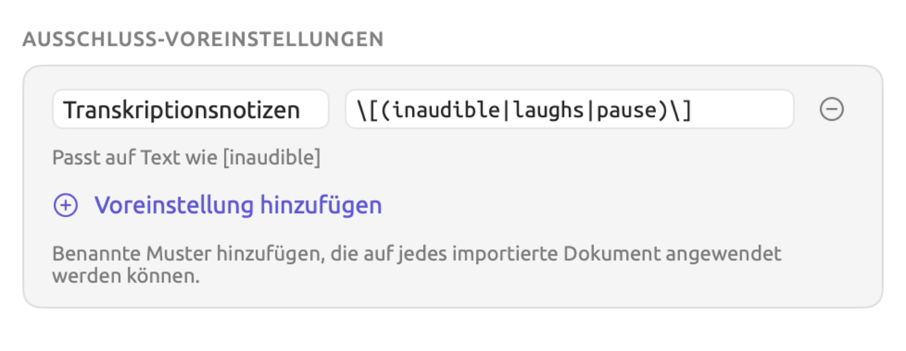


Sobald Name und Muster eingegeben sind, erhält das Menü Voreinstellungen einen Eintrag. Fehlt noch der Name oder das Muster, bleibt der Eintrag in den Einstellungen, bis Sie ihn vervollständigen oder löschen.
Wenn Sie im Menü Voreinstellungen eine Voreinstellung wählen, wird ihr Muster in das Dokument kopiert. Eine Voreinstellung, deren Muster das Dokument bereits hat, ist im Menü deaktiviert. Um ein solches Muster später zu ändern, bearbeiten Sie die Eigenschaften jedes Dokuments einzeln (Dokumenteigenschaften).
Wählen Sie eine Voreinstellung mit ungültigem Muster, wird das ganze Dokument indiziert. Prüfen Sie deshalb die Zeile unter Ihrem Muster, bevor Sie eine Voreinstellung wählen.
Um eine Voreinstellung zu löschen, klicken Sie auf das kleine Minuszeichen neben dem Eintrag (Voreinstellung entfernen). Der Eintrag verschwindet sofort.
Der Bereich „Leseansicht“
Der Bereich Leseansicht legt fest, wie die Leseansicht Text darstellt. Seine ersten beiden Abschnitte, Typografie und Seite, enthalten dieselben Optionen wie das Menü Schrift, Randspalte und Textgröße in der Titelleiste der Leseansicht (siehe Die Titelleiste in Kapitel 5, Lesen und Bearbeiten). Die Befehle Darstellung ▸ Größerer Text (⌘+), Kleinerer Text (⌘-) und Textgröße zurücksetzen (⌘0) ändern genau dieselbe Textgröße, und eine Änderung an einer Stelle zeigt sich auch an den anderen.
| Abschnitt | Zeile | Möglichkeiten | Zu Beginn |
|---|---|---|---|
| Typografie | Schrift | System Serif, System Sans, System Rounded, System Mono, Georgia, Palatino, Baskerville, Times New Roman, Helvetica Neue, Avenir Next, Menlo | System Serif |
| Typografie | Textgröße | ein Schieberegler von 70 bis 200 Prozent in Schritten von 10 | 100 Prozent |
| Seite | Layout | Einspaltig, Doppelseite | Einspaltig |
| Seite | Randnummerierung | Aus, Absätze, Sätze, Beide | Beide |
Die Randspalte ist die Spalte links neben Ihrem Text, in der die Leseansicht die Absätze und Sätze des Dokuments nummeriert (siehe Die Randspalte in Kapitel 5, Lesen und Bearbeiten). Der gebogene Pfeil neben der Prozentangabe der Textgröße, Zurücksetzen, setzt den Text auf seine Standardgröße von 100 Prozent zurück. Bei 100 Prozent ist der Pfeil deaktiviert, und wenn Sie den Mauszeiger darauf halten, erscheint Bereits auf Standard. Mehr zu Schriften, Größen, Layouts und Randnummern finden Sie unter Die Darstellung des Textes ändern in Kapitel 5, Lesen und Bearbeiten.
Mit Alles auf Standard zurücksetzen oben im Bereich setzen Sie alle Zeilen des Bereichs auf einmal auf ihre Anfangswerte zurück.
Auswahl
Der Abschnitt Auswahl bestimmt, wie die Leseansicht Ihre Auswahl darstellt und wie sie mit dem übrigen Text um die Auswahl herum verfährt.
| Zeile | Möglichkeit | Was Sie sehen |
|---|---|---|
| Ausgewählter Text | Volle Fläche | Eine abgerundete Fläche in der Textfarbe, darauf die ausgewählten Wörter in der Papierfarbe |
| Hervorheben | Eine leichte Tönung hinter den ausgewählten Wörtern | |
| Kopf und Dependenten | Bögen | Eine gebogene Linie vom ausgewählten Wort zu seinem Kopf und zu jedem Dependenten, mit einer kleinen Pfeilspitze am Dependenten |
| Linien | Dieselben Verbindungen als eckige Klammern über dem Text | |
| Beschriftungen | Der Name jeder Relation über dem betreffenden Wort | |
| Hervorheben | Der Kopf gelb getönt, die Dependenten blassviolett | |
| Aus | Nur die Auswahl | |
| Umgebender Text | Abblenden | Der übrige Text des Dokuments abgeschwächt, rund um die Sätze mit der Auswahl |
| Leicht abblenden | Dasselbe, nur schwächer | |
| Satz hervorheben | Der Satz mit dem ausgewählten Wort getönt | |
| Aus | Das ganze Dokument wie gewohnt | |
| Audiowiedergabe | Spotlight | Alles außer der gerade abgespielten Passage abgeschwächt |
| Volle Fläche | Die gerade abgespielte Passage auf einer Fläche in der Akzentfarbe | |
| Hervorheben | Die gerade abgespielte Passage leicht in der Akzentfarbe getönt |
In jeder Zeile ist die erste Möglichkeit die Voreinstellung.
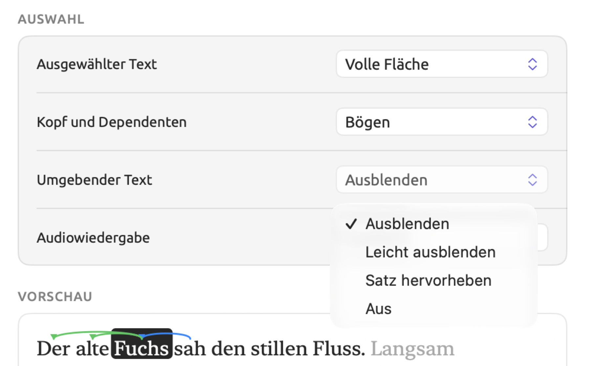
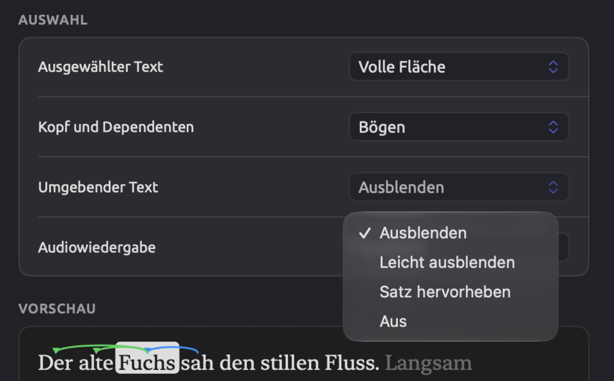
Kopf und Dependenten gilt, wenn ein einzelnes Wort ausgewählt ist. Der Kopf ist das Wort, zu dem das ausgewählte Wort in der grammatischen Struktur des Satzes gehört, zum Beispiel das Verb, dessen Subjekt es ist. Die Dependenten eines Wortes sind alle Wörter, die von ihm abhängen. Mehr zu den Relationen zwischen Wörtern und ihrer Einteilung finden Sie in Kapitel 11, Der Grammatik-Inspektor. Bögen, Linien und Beschriftungen erscheinen in den voreingestellten Farben der Lens Grammatische Funktion.
Die Vorschau unten im Bereich zeigt den Satz Der alte Fuchs sah den stillen Fluss. mit ausgewähltem Fuchs. Der Kopf von Fuchs ist sah, denn Fuchs ist dessen Subjekt. Die Dependenten von Fuchs sind Der und alte. Ist Beschriftungen gewählt, zeigt die Vorschau Beschriftungen über sah (▲ sb, Subjekt) sowie über Der und über alte (jeweils nk, nominaler Kernbestandteil). Jede Beschriftung nennt die grammatische Funktion, die das Wort im Verhältnis zu Fuchs hat, und das ▲ kennzeichnet den Kopf. Englische Dokumente verwenden andere Beschriftungen, etwa nsubj statt sb.
Mit Umgebender Text legen Sie außerdem fest, wie eine Textstelle erscheint, zu der LemmaLoom Sie führt, etwa über einen Abfragetreffer. Bei Leicht abblenden oder Abblenden wird der umgebende Text abgeschwächt; bei Satz hervorheben oder Aus wird die Textstelle stattdessen hellgelb hervorgehoben.
Audiowiedergabe gilt nur, wenn die Leseansicht einer Aufnahme folgt (Mit dem Audio scrollen in der Wiedergabeleiste eingeschaltet; siehe Dem Transkript folgen in Kapitel 5, Lesen und Bearbeiten). Wie stark Spotlight den übrigen Text abschwächt, hängt von der Einstellung bei Umgebender Text ab. Bei Leicht abblenden fällt die Abschwächung geringer aus, bei allen anderen Möglichkeiten so stark wie bei Abblenden.
Die Vorschau
Unten im Bereich steht die Vorschau. Sie zeigt zwei kurze Textausschnitte in Ihrer Schrift, Ihrer Textgröße und Ihrem Thema. Der erste enthält ein ausgewähltes Wort mit seinem Kopf und allen seinen Dependenten, der zweite zeigt Text so, wie er beim Abspielen aussieht. Beide ändern sich mit den Zeilen darüber, und ihr Text erscheint in der Sprache der Benutzeroberfläche.
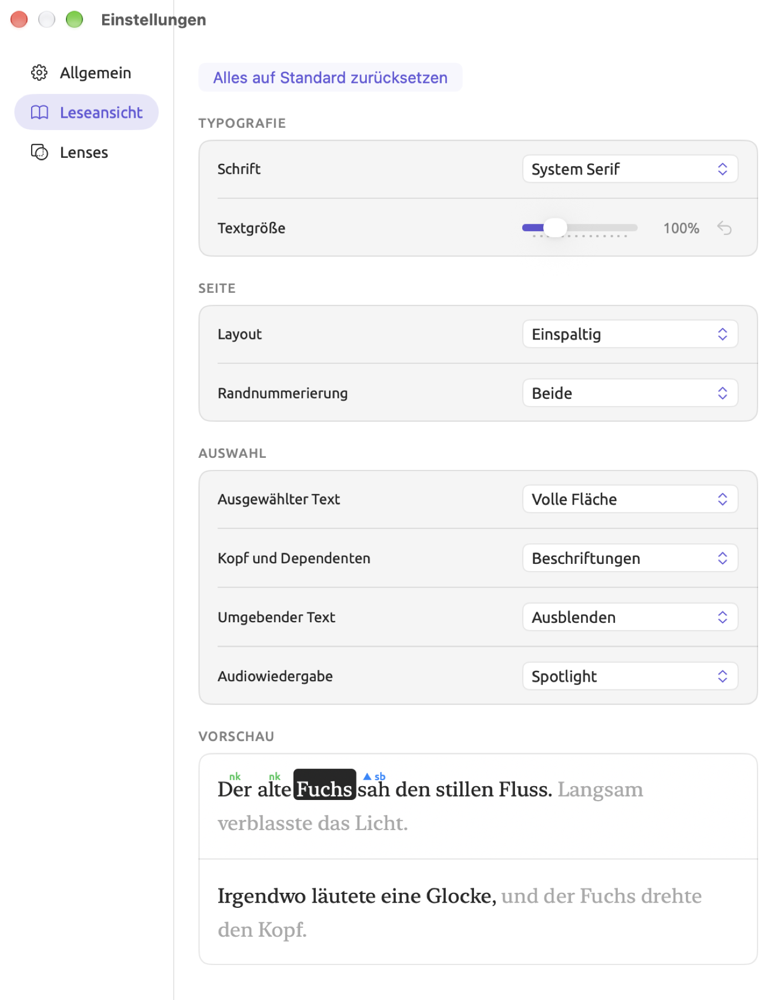
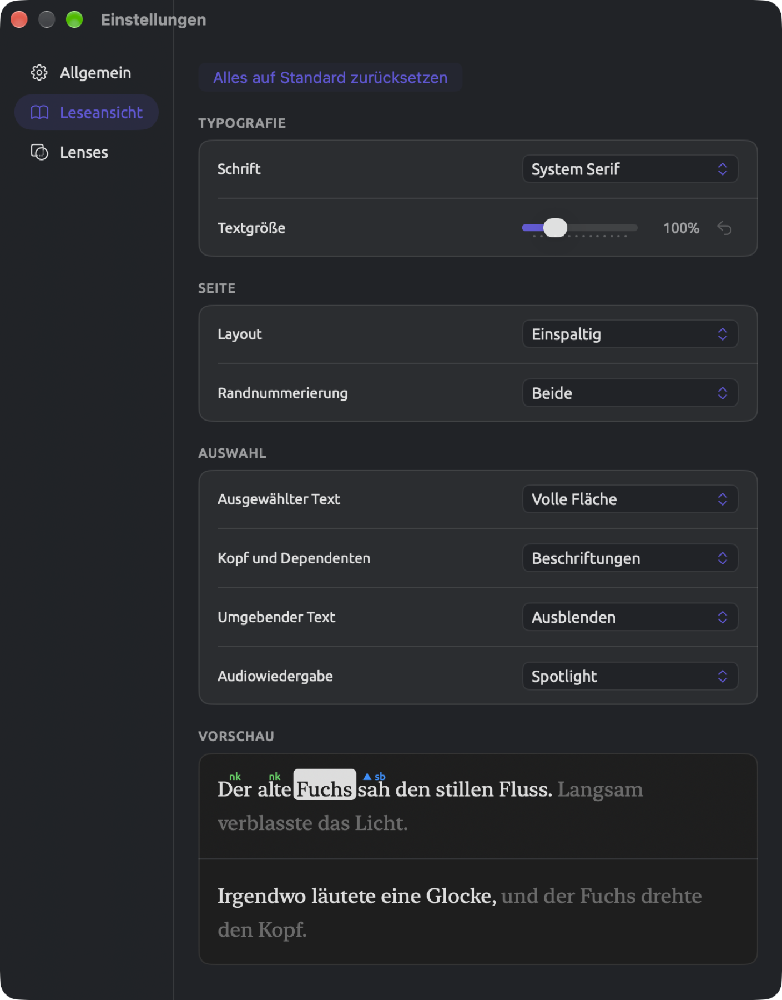
Der Bereich „Lenses“
Eine Lens annotiert die Wörter Ihrer Dokumente nach einer Einteilung wie der Wortklasse (siehe Kapitel 6, Lenses). Die Kategorien einer Lens sind ihre Aspekte, etwa Substantiv in Wortklasse. Im Bereich Lenses legen Sie Farbe und Stil jedes Aspekts von vier eingebauten Lenses fest. Das hilft, wenn sich zwei Aspekte optisch ähneln oder wenn Sie mit mehreren Lenses gleichzeitig arbeiten.
Der Bereich Lenses hat für jede der vier Lenses einen eigenen Abschnitt:
| Abschnitt | Zeilen | Stil zu Beginn |
|---|---|---|
| Wortklasse | Substantiv, Verb, Adjektiv, Adverb, Pronomen, Artikelwort, Präposition, Konjunktion, Zahlwort, Interjektion | Unterstreichen |
| Grammatische Funktion | Subjekt, Objekt, Prädikativ, Komplement, Adjektivisch, Adverbial, Apposition, Agens, Konjunkt, Konnektor | Unterstreichen |
| Phrase | Nominalphrase, Verbalphrase, Präpositionalphrase, Adjektivphrase, Adverbphrase, Konjunktionalphrase, Interjektion, Nominalgruppe | Hervorheben |
| Morphologie | 20 Zeilen, jeweils benannt nach einem Merkmal und einem seiner Werte, von Tempus: Vergangenheit bis Genus: Neutrum | Hervorheben |
Die Zeilen von Morphologie umfassen Tempus, Numerus, Steigerung, Verbform, Kasus, Modus und Genus. Kasus, Modus und Genus kommen nur in deutschen Dokumenten vor; die Lens Morphologie selbst arbeitet mit englischen und deutschen Dokumenten. Jedes Wort zeigt nur ein morphologisches Merkmal, ein deutsches Substantiv im Dativ also nur Kasus: Dativ. Mehr dazu finden Sie unter Morphologie in Kapitel 6, Lenses.
Andere eingebaute Lenses wie Modalität und Kohäsion haben dagegen feste Farben. Wörterbuch-, Abfrage- und Analysator-Lenses übernehmen ihre Farben von ihrem Wörterbuch, ihrer Abfrage oder ihrem Analysator.
Jede Zeile enthält den Namen des Aspekts, ein Stilmenü und ein Farbfeld, nach einer Änderung außerdem eine Schaltfläche zum Zurücksetzen. Im Stilmenü stehen vier Stile zur Wahl, jeder mit seinem eigenen Symbol.
| Stil | So sieht ein annotiertes Wort aus |
|---|---|
| Hervorheben | Ein blasser Streifen in der Farbe des Aspekts hinter dem Wort |
| Unterstreichen | Eine Linie in der Farbe unter dem Wort |
| Textfarbe | Die Buchstaben in der Farbe |
| Fett | Die Buchstaben fett und in der Farbe |
Ob eine Farbe deutlich genug hervortritt, hängt vom Stil ab. Hervorheben legt eine zarte Tönung der Farbe hinter das Wort, und eine helle Farbe fällt dabei unter Umständen kaum auf. Bei Textfarbe und Fett nehmen die Buchstaben selbst die volle Farbe an; sie muss sich deshalb deutlich von der Papierfarbe Ihres Themas abheben. Siehe auch Farben und Stile der Lenses in Kapitel 6, Lenses.
Einen Aspekt ändern
Das Beispielprojekt enthält den Meinungsbeitrag „Uns läuft die Zeit davon“, das deutsche Original von „Uns läuft die Zeit davon (Englisch)“. An ihm lässt sich gut der Dativ beobachten, der im Deutschen die indirekten Objekte kennzeichnet, ebenso die Substantive nach Wörtern wie mit. Falls Sie „Klimadebatte“ noch nicht importiert haben, importieren Sie das Projekt mit Ablage ▸ Importieren ▸ Beispielprojekt. In der Lens Morphologie ist zunächst jeder Kasus blass hervorgehoben. So heben Sie die Dative von den übrigen Kasus ab:
- Wählen Sie LemmaLoom ▸ Einstellungen … (⌘,) und klicken Sie auf Lenses.
- Scrollen Sie nach unten zum Abschnitt Morphologie und suchen Sie die Zeile Kasus: Dativ.
- Öffnen Sie ihr Stilmenü, das Hervorheben zeigt, und wählen Sie Fett.
- Klicken Sie auf das Farbfeld (das kleine Farbmuster) daneben. Wählen Sie in der Farbauswahl von macOS, die sich öffnet, ein dunkles Rot.
- Öffnen Sie „Uns läuft die Zeit davon“ und aktivieren Sie Morphologie im Lens-Menü (siehe Das Lens-Menü in Kapitel 6, Lenses).
Dative erscheinen jetzt fett in dunklem Rot, während die übrigen Kasus blass hervorgehoben bleiben. Änderungen an Aspekten von Wortklasse, Grammatische Funktion und Phrase gelten auch im Glossar (Hilfe ▸ Glossar), denn es zeigt jedes Tag und jeden Begriff, der für einen dieser Aspekte steht, in Farbe und Stil dieses Aspekts. Die Lenslets in der Legende über Ihrem Text behalten ihre voreingestellten Farben, sodass das Lenslet Kasus: Dativ orange bleibt. Dieselben Schritte gelten für jeden Aspekt der vier Lenses.
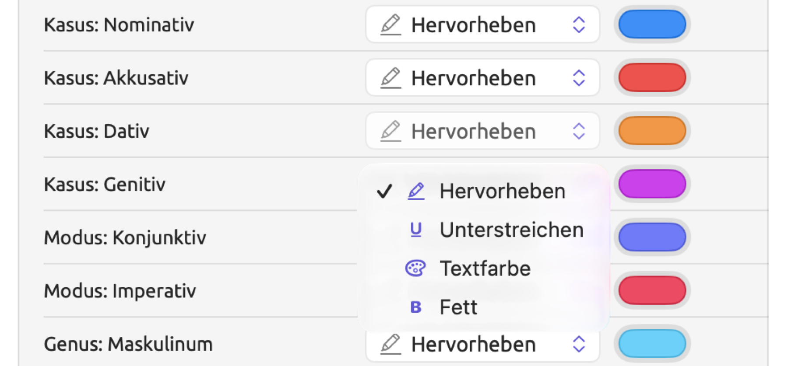
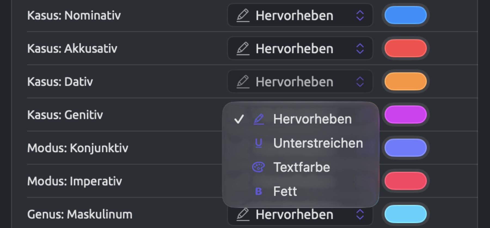
Zurück zu den Voreinstellungen
Jeder Aspekt, den Sie geändert haben, erhält eine Schaltfläche zum Zurücksetzen, einen gebogenen Pfeil am Ende seiner Zeile. Ein Klick darauf stellt die voreingestellte Farbe und den voreingestellten Stil wieder her.
Alles auf Standard zurücksetzen ganz oben im Bereich setzt alle Aspekte der vier Lenses zurück. Das Zurücksetzen ist endgültig.
Wo Einstellungen gespeichert werden
Alles, was Sie im Einstellungsfenster ändern, gilt nur für den Mac, an dem Sie arbeiten. Die Bibliothek mit Ihren Projekten (siehe Wo die Arbeit gespeichert wird in Kapitel 2, Erste Schritte) merkt sich außerdem, wo Sie in jedem Projekt stehen.
| Einstellung | Gespeichert |
|---|---|
| Alles, was Sie im Einstellungsfenster wählen | auf dem Mac |
| Mit dem Audio scrollen, Größe und Position des Videos und ob es eingeklappt ist | auf dem Mac |
| Die Trennlinie zwischen zwei Dokumenten in der geteilten Ansicht, die Trennlinien in Analysebereichen (etwa die zwischen dem Abfrageeditor und den Ergebnissen einer Abfrage) und die Darstellung von Wortskizzen | auf dem Mac |
| Welche Projekte Favoriten sind, das zuletzt geöffnete Projekt, die geöffneten Tabs jedes Projekts sowie für jedes Dokument die Leseposition, die Lenses und der Inspektor (ob er angezeigt wird, seine Breite und welcher Tab aktiv ist) | in der Bibliothek |
Ihre Projekte samt Favoriten, geöffneten Tabs und Lesepositionen ziehen mit der Bibliothek auf einen anderen Mac um oder lassen sich aus einer älteren Sicherungskopie wiederherstellen. Einstellungen gelten dagegen pro Mac. Wenn alles gleich aussehen soll, wählen Sie Thema, Schriften und Lens-Stile deshalb auf jedem Mac.
Wer Ihr LemmaLoom-Archiv oder REFI-QDA-Projekt öffnet, sieht alles mit den Einstellungen des eigenen Mac, also mit dessen Thema, Schriften und Lens-Stilen (siehe Kapitel 22, Austausch und Export).